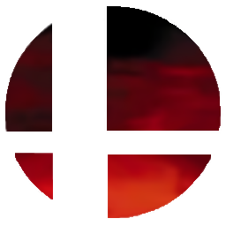

 Super Smash Bros. Melee
Details
 |
|
| Playtime | Not Played |
| Last Activity | Never |
| Added | 4/29/2025 6:57:43 |
| Modified | 4/29/2025 23:24:51 |
| Completion Status | Not Played |
| Library | Playnite |
| Source | |
| Platform | Nintendo Wii |
| Release Date | 11/21/2001 |
| Community Score | 89 |
| Critic Score | 92 |
| User Score | |
| Genre | Fighting |
| Developer | HAL Laboratory |
| Publisher | Nintendo |
| Feature | Multiplayer Single Player |
| Links | Wikipedia Official website |
| Tag | [People] artist: Hitoshi Kobayashi [People] composer: Hirokazu Ando [People] composer: Shogo Sakai [People] composer: Tadashi Ikegami [People] composer: Takuto Kitsuta [People] designer: Hitoshi Kobayashi [People] designer: Masahiro Sakurai [People] director: Masahiro Sakurai [People] producer: Hiroaki Suga [People] producer: Kenji Miki [People] producer: Masayoshi Tanimura [People] producer: Shigeru Miyamoto [People] programmer: Yoshiki Suzuki |
Description
Super Smash Bros. Melee is a 2001 crossover fighting video game developed by HAL Laboratory and published by Nintendo for the GameCube. It is the second installment in the Super Smash Bros. series. It features characters from Nintendo video game franchises such as Mario, The Legend of Zelda, Star Fox, Pokémon, and Donkey Kong among others. The stages and gameplay modes reference or take designs from these franchises as well.
Melee includes all playable characters from the first game and also adds characters from additional franchises such as Fire Emblem, of which no games had been released outside Japan at the time, in addition to new stages and gameplay modes. Like other games in the Smash Bros. series, Melee's gameplay system offers an unorthodox approach to the fighting game genre, with a counter that measures damage with increasing percentages, representing the knockback the character will experience, rather than the depleting health bar seen in most fighting games.
Melee was first released in Japan in November 2001, in the Americas in December 2001, and in Europe and Australia in May 2002. The game received widespread acclaim from critics, earning praise for its visuals, simple controls, gameplay, and orchestrated soundtrack, as well as several awards and acknowledgments from various publications; it is now considered one of the greatest video games ever made. It achieved strong sales upon its release, becoming the GameCube's best-selling title, with over seven million copies sold by 2008. Considered one of the most competitively viable Smash Bros. games due to its fast-paced, aggressive gameplay and continuously developing metagame, Melee has been featured in many competitive gaming tournaments, boasting a dedicated grassroots fan community which has kept its competitive scene alive well beyond the game's original lifespan. It was followed by Super Smash Bros. Brawl for the Wii in 2008.
Gameplay
Like its predecessor, Super Smash Bros. Melee is a platform fighter that differs from traditional fighting games as the objective is to force their opponents beyond the boundaries of the stage. Most attacks inflict damage and can, if enough damage is dealt, knock back the enemy. Each character's health is measured by a meter that represents damage as a percentage. The higher the percentage value, the farther the player gets knocked back, and the easier they are to knock off the stage, which will result in the character's death and the loss of a stock, or life. Unlike other games of the same genre, in which moves are entered by button-input combinations, most moves in Super Smash Bros. Melee can be accessed via one-button presses and a joystick direction. For example, by tilting the joystick to the side and pressing the "B" button, the character will use their "side special" attack. Tilting the joystick up, down, or not tilting it at all while pressing B will use the up, down, or neutral special, respectively.
During battles, items related to Nintendo games or merchandise fall onto the game field. These items have purposes ranging from inflicting damage on the opponent to restoring health to the player. Some items are throwable (ranged items), some do melee damage (battering items), and some have an instant effect on the player (transforming items).
Most stages have a theme relating to a Nintendo franchise or a specific Nintendo game and are interactive to the player. For example, the Mushroom Kingdom stage is from Super Mario Bros, and the Temple stage is from The Legend of Zelda. Although the stages are rendered in three dimensions, players can only move on a two-dimensional plane. Not all stages are available immediately; some stages must be "unlocked" by achieving particular requirements. Some stages feature moving elements and platforms and hazards that harm players, while others lack these elements.
Single-player
Single-player mode provides the player with a variety of side-scrolling fighting challenges. The applicable modes range from "Classic Mode", which involves the player battling multiple opponents and a boss character, to the "Home Run Contest", a minigame involving the player trying to launch a sandbag as far as possible with a Home Run Bat for ten seconds. Some of these modes are personalized for the character; for example, the "Target Test" sets out a specialized area for a character in which they aim to destroy ten targets in the least amount of time they can. These areas may include references to that particular character's past and legacy. Melee introduced "Adventure Mode", which takes the player to several predefined universes of characters in the Nintendo franchise. "All-Star Mode" is an unlockable feature that requires the player to defeat every character in the game while having only one stock and three health supplements between battles.
In the multiplayer mode, up to four players or computer-controlled characters may fight in a free-for-all or on separate teams. The central processing unit (CPU) characters' artificial intelligence (AI) difficulty is ranked from one to nine in ascending order of difficulty. Individual players can also be handicapped; the higher the handicap, the stronger the player. Victory is determined in five ways, depending on the game type. The two most common multiplayer modes are “Time mode”, where the player or team with the most KOs and least falls wins after a predetermined amount of time, and "Stock mode", a battle in which the last player or team with lives remaining wins. This can be changed to less conventional modes like "Coin mode", which rewards the richest player as the victor. Players must collect coins created by hitting enemies and try not to lose them by falling off the stage; harder hits release higher quantities of coins. Other options are available, updating from Super Smash Bros., such as determining the number and type of items that appear during the battle.
Trophies (known as "Figures" in the Japanese version) of various Nintendo characters and objects can be collected throughout the game. These trophies include figures of playable characters, accessories, and items associated with them as well as series and characters not otherwise playable in the game. The trophies range from the well-known to the obscure, and even characters or elements only released in Japan. Super Smash Bros. had a similar system of plush dolls; however, it only included the 12 playable characters. One trophy is exclusive to the Japanese version of the game.
Playable characters
Super Smash Bros. Melee features 25 (26 if Zelda and Sheik are considered separate) characters, 13 (14 with Zelda and Sheik separate) more than its predecessor. Fourteen are available initially, while the other 11 characters require completing specific tasks to become available. Every character featured in the game is derived from a popular Nintendo franchise. All characters have a symbol that appears behind their damage meter which represents their series, such as a Triforce symbol behind Link's damage meter and a Poké Ball behind a Pokémon species. Some characters represent popular franchises, while others were less-known at the time of the release; Marth and Roy represent the Fire Emblem series, which was not released outside Japan at the time. The characters' appearance in Super Smash Bros. Melee led to a rise in the popularity of the series, including releasing it outside of Japan. References are made throughout the game to the relationship between characters of the same universe; in one of the events from "Event mode", Mario must defeat his enemy Bowser to rescue Princess Peach. Furthermore, each character has recognizable moves from their original series, such as Samus's firearms from the Metroid series and Link's arsenal of weapons.
Development and release
Super Smash Bros. Melee was developed by HAL Laboratory, with Masahiro Sakurai as the head of production. Mario creator Shigeru Miyamoto served as co-producer. The game was one of the first games released on the GameCube and highlighted the advancement in graphics over the Nintendo 64. The project proposal/initial design document for the game was completed on July 5, 1999. Sakurai wanted to make an opening FMV sequence to pay homage to the debut of the GameCube. HAL and Sakurai worked with three separate graphic houses in Tokyo to make the opening sequence. On their official website, the developers posted screenshots and information highlighting and explaining the attention to physics and detail in the game, with references to changes from its predecessor. The game was in development for 13 months, beginning around autumn 2000, and Sakurai called his lifestyle during this period "destructive" with no holidays and short weekends. Unlike the experimental first Super Smash Bros., he felt great pressure to deliver a quality sequel, claiming it was the "biggest project I had ever led up to that point". Despite the stressful development cycle, in a 2010 interview, Sakurai proudly called Melee "the sharpest game in the series... it just felt really good to play", even compared to its successor, Super Smash Bros. Brawl.
On the game's official Japanese website, Sakurai and the developers explained reasons for making particular characters playable and why some characters were not added. Initially, the development team wanted to replace Ness with Lucas, the main character of Mother 3, but retained Ness in consideration of delays. Video game developer Hideo Kojima originally requested the inclusion of Solid Snake to Sakurai, and Yuji Naka of Sonic Team requested the inclusion of Sonic the Hedgehog to Sakurai, but neither characters were added as the game was too far in development. Additional development time later enabled all three characters to be included in Brawl. Marth and Roy were initially intended to be playable exclusively in the Japanese version of Super Smash Bros. Melee due to Fire Emblem's lack of representation in the West at the time; however, they received favorable attention during the game's North American localization, leading to the decision for the developers to include them in the Western version.
Sakurai stated that the development team had suggested characters from four other games to represent the Famicom/NES era, until the developers eventually chose the Ice Climbers to fulfill this role. Additionally, Ayumi Tachibana from Famicom Detective Club was considered as a playable character, but was ultimately relegated to a cameo role as a trophy. The developers have noted characters that have very similar moves to each other on the website; such characters have been referred to as "clones" in the media.
Shogo Sakai took over as composer of the game's opening in place of Hirokazu Ando on February 14, 2001. Voice recording also started that month, with the first sessions involving the Japanese Star Fox cast and Masachika Ichimura, who voiced Mewtwo.
Nintendo presented the game at the Electronic Entertainment Expo 2001 as a playable demonstration. The next major exposition of the game came in August 2001 at Space World, when Nintendo displayed a playable demo that updated from the previous demo displayed at E3. Nintendo offered a playable tournament of the games for fans in which a GameCube and Super Smash Bros. Melee were prizes for the winner. Before the game's release, the Japanese official website included weekly updates, including screenshots and character profiles. Nintendo followed this trend with Super Smash Bros. Brawl, in which there were daily updates by the game's developer, Masahiro Sakurai. Japanese gaming magazine Famitsu reported that Nintendo advertised the game in between showings of Pokémon 4Ever across movie theaters in Japan. In January 2003, Melee was re-released as part of the Player's Choice program, a marketing label used by Nintendo to promote video games that have sold more than a million copies. In August 2005, Nintendo bundled the game with the GameCube for $99.99.
Music
Super Smash Bros. Melee features both new and re-arranged music from many of Nintendo's popular gaming franchises. In 2002, Enterbrain released a soundtrack in Japan titled Dairantou Smash Brothers DX Orchestra Concert. The same soundtrack was released in 2003 as Smashing... Live! as a bonus for subscribing to Nintendo Power magazine in North America, and also as a free gift in an issue of the British Official Nintendo Magazine. The soundtrack does not include music taken directly from the game, but features many live orchestral arrangements performed by the New Japan Philharmonic. The game contains a number of unlockable tracks that can be obtained after making certain in-game accomplishments. On the same website, the developers have posted discussions about the game's music and voice acting between Masahiro Sakurai and the game's composers.
Reception
Super Smash Bros. Melee received critical acclaim from reviewers, most of whom credited Melee's expansion of gameplay features from Super Smash Bros. Focusing on the additional features, GameSpy commented that "Melee really scores big in the 'we've added tons of great extra stuff' department". Reviewers compared the game favorably to Super Smash Bros. IGN's Fran Mirabella III stated that it was "in an entirely different league than the N64 version"; GameSpot's Miguel Lopez praised the game for offering a more advanced "classic-mode" compared to its predecessor, while detailing the Adventure Mode as "really a hit-or-miss experience". Despite a mixed response to the single-player modes, many reviewers expressed the game's multiplayer mode as a strong component of the game. In their review of the game, GameSpy stated that "you'll have a pretty hard time finding a more enjoyable multiplayer experience on any other console".
Melee's visuals garnered a positive reaction. GameSpot lauded the game's character and background models, stating that "the character models are pleasantly full-bodied, and the quality of their textures is amazing". IGN's Fran Mirabella III praised the game's use of physics, animation and graphics, although his colleague Matt Casamassina thought that "some of the backgrounds lack the visual polish endowed upon the characters" when giving a second opinion about the game.
Critics praised the game's orchestrated soundtrack; while GameSpot's Greg Kasavin commented that "it all sounds brilliant". GameSpy praised the music for its nostalgic effect, with soundtracks ranging from multiple Nintendo series.
Reviewers have welcomed the simplistic controls, but its "hyper-responsiveness", with the characters easily dashing and precise movements being difficult to perform, was expressed as a serious flaw of the game by GameSpot. With a milder criticism of controls, Bryn Williams of GameSpy commented that "movement and navigation seems slightly too sensitive". The basis of Melee's gameplay system is the battles between Nintendo characters, which has been suggested as being overly hectic; N-Europe questioned whether the gameplay is "too Frantic?", even though they enjoyed the variety of modes on offer. Similarly, Nintendo Spin's Clark Nielsen stated that "Melee was too fast for its own good", and "skill was more about just being able to wrap your head around what was happening as opposed to really getting into the combat". In regards to the pace of the game, Edge commented that it even made gameplay features such as "blocking" redundant, as the player is not given enough time to react to an attack.
Despite the new features added to the game, some reviews criticized Melee for a lack of originality and for being too similar to its predecessor, Super Smash Bros. Caleb Hale from GameCritics.com noted that while it was "every bit as good as its Nintendo 64 predecessor" he also felt "the game doesn't expand much past that point". On a similar note, Edge stated that "it's not evolution; it's reproduction", in reference to a perceived lack of innovation. The nostalgic nature of the game received a positive reaction, as well as the accompanying stages and items that allude to past Nintendo games. Gaming journalists have welcomed the roster of 26 Nintendo characters, as well as the trophy system, which Nintendo Spin labeled as "a great addition to this game".
Sales
When released in Japan, it became the fastest selling GameCube game with 358,525 units sold in the week ending November 25, 2001. This success continued as the game sold more than a million units only two months after its release, making it the first GameCube title to reach a million copies. The game also sold well in North America, where it sold 250,000-copies in nine days. In the United States, Super Smash Bros. Melee was the 19th best-selling video game in 2001 according to the NPD Group. By July 2006, it had sold 3.2 million copies and earned $125 million in the United States alone. Next Generation ranked it as the fifth highest-selling game launched for the PlayStation 2, Xbox or GameCube between January 2000 and July 2006 in that country. Approximately 4.06 million units have been sold in the country as of December 27, 2007. With a software-to-hardware ratio of 3:4 at one time, some have attributed the increasing sales of the GameCube near the launch date to Melee. As of March 10, 2008, Super Smash Bros. Melee is the best-selling GameCube game, with more than seven million copies sold worldwide. It has been estimated that at one point in time 70% of all GameCube owners also owned Melee.
Several publications have acknowledged Super Smash Bros. Melee in competitions and awards. In their "Best of 2001" awards, GameSpy chose it as Best Fighting GameCube Game, IGN's reader choice chose it as Game of the Year, Electronic Gaming Monthly chose it as Best Multiplayer and Best GameCube Game, and GameSpot chose it as the Best GameCube Game and tenth best game of the year. During the 5th Annual Interactive Achievement Awards, the Academy of Interactive Arts & Sciences nominated Super Smash Bros. Melee for "Console Fighting Game of the Year" and "Outstanding Achievement in Animation", which were ultimately awarded to Dead or Alive 3 and Oddworld: Munch's Oddysee, respectively. It also received a nomination in GameSpot's "Best Music" and "Best Fighting Game" categories.
GameFAQs placed it sixth in a poll of the 100 best games ever and was in the final four of the "Best. Game. Ever." contest. In the 200th issue of Electronic Gaming Monthly, the editors selected Melee as the 92nd most influential game in their "Top 200 Games of Their Time" list, defining Melee as "Billions of things to unlock, plus Yoshi pummeling Pikachu with a bat". In a similar competition, Nintendo Power named Super Smash Bros. Melee the 16th best game ever to appear on a Nintendo console, and selected it as the 2001 "Game of the Year". IGN named it the third best GameCube game of all-time in 2007 as a part of a feature reflecting on the GameCube's long lifespan, citing it as "the grand stage of fighters, much like Mario Kart is for racing fans". GameSpy chose it as fourth in a similar list, citing that it had "better graphics, better music, more characters, more gameplay modes, more secrets to discover" in comparison to its predecessor. The game was ranked 58th in Official Nintendo Magazine's "100 Greatest Nintendo Games Ever" feature. In 2019, Game Informer ranked it as the 2nd best fighting game of all time. Edge ranked the game 91st on their 100 best Video Games in 2007.
Legacy
The inclusion of Marth and Roy in Melee's roster led to increased awareness of the Fire Emblem series outside of Japan. This, combined with the high sales and positive reception of Advance Wars, resulted in the next Fire Emblem title being localized. The game, simply called Fire Emblem in Western markets, is a prequel to Fire Emblem: The Binding Blade, the game from which Roy originates. All future Fire Emblem titles to date, barring Fire Emblem: New Mystery of the Emblem, have been released overseas.
Competitive scene
Super Smash Bros. Melee is a widely played competitive video game and has been featured in several high-profile tournaments. Many consider it to be the most competitively viable game in the series. Melee version NTSC was first released on the GameCube in 2001 in Japan and later North America, Nintendo ran the first ever Melee tournament named Premium Fight most likely from August 25 to August 27, 2001.
The tournaments increased in popularity, and an echelon of competitively successful top players emerged in each region of the United States and Japan. Professional gaming organizations began to take more notice of Melee and started sponsoring players professionally. Several professional Melee players including Christopher "KillaOR" McKenzie, Isai Alvarado, and Ken were seen in the 2005 "I'm a Professional Gamer" episode of the MTV reality series True Life. Tournaments became larger, more televised and more professional. Increases in audience and competitor counts, as well as prize pools, were also seen. From 2004 to 2007, Major League Gaming sponsored Melee on its Pro Circuit. Ken Hoang, also known as "The King of Smash" was considered to be the game's best player from 2003 to 2006, and has won over $50,000 from Smash tournaments.
Melee was also included in the Evolution Championship Series (Evo) in 2007, a fighting game tournament held in Las Vegas. Melee was hosted at Evo 2013 after a charity vote to decide the final game to be featured in its tournament lineup. Due to the large turnout and popularity that year, Evo again included Melee at their 2014, 2015, 2016, 2017, and 2018 events.
The competitive Smash community was featured in a 2013 crowd-funded documentary called The Smash Brothers. The film detailed the history of the professional scene and profiled seven prominent Melee players including Hoang, Azen, Jason "Mew2King" Zimmerman, Isai, PC Chris, KoreanDJ, and Evo 2013 and Evo 2014 champion, Joseph "Mang0" Marquez. Commentary footage from a Melee tournament is the origin of the Wombo combo internet meme.
In 2020, Project Slippi, a fork of the Dolphin emulator for Melee designed to introduce quality-of-life features such as replays and online play, was updated to support rollback netcode and integrated matchmaking, allowing netplay across large distances with little latency. In the same year, an e-sports competition known as "The Big House" was sent a cease and desist by Nintendo, due to the usage of Slippi.